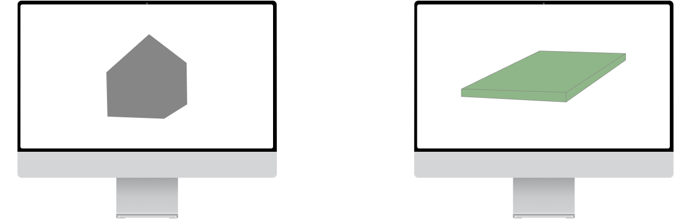

Role
I led the redesign of the core flow of our platform from concept to release. This involved talking to users, working with internal stakeholders, ideation and design refinement, and working with our engineering team.
Project
Home - Lot Compatibility Redesign
August, 2022
Background
Homebuyers were not able to confidently choose a home and lot online because it is unclear if combinations were compatible
Direction Development
How might we help homebuyers find a compatible home and lot pairing?
User Insights
Lack of Freedom to Explore
A linear flow restriction exploration of home-lot combinations.
Unclear Compatibility
Homebuyers had to research lot setbacks and zoning requirements on their own.
Visualization
Homebuyers had struggled to imagine a given home on a given lot.
Technology Development
Working with the engineering team, we developed an automated home-lot compatibility engine that evaluates land and compares each house footprint to assess compatibility.
Home-Lot Compatibility Engine
Exploring Tradeoffs
I designed and prototyped an experience allowing users to browse both lots and homes and assess compatibility between the two.
Guided
A linear flow to reduce the ambiguity of the process.
Browsable
Scrollable content of homes, lots, and combinations.
Exploring Homes and Lots
Mixing and matching homes and lots in once place.
Exploring Combinations
A visual representation of homes on compatible lots.
Prototyping and User Testing
I designed and prototyped an experience allowing users to browse both lots and homes and assess compatibility between the two.
User Feedback
New users
Existing Users
Features & Functions
Based on user feedback, I shifted the home page to focus on land and created a separate Catalog page for home browsing.
Focusing the main page on Land
Lots are time-sensitive and the grounding piece of browsing experience. When a lot first comes on the market, homebuyers must be ready to move forward quickly and with intention
Dedicated space for home browsing
A focused experience on home preferences, details, and exploration separates the complex process into bite-sized pieces.
Bringing Together Homes & Lots
When a lot comes on the market, user can quickly see if any of the homes they like are buildable on that lot.
Final Outcomes
Lots Saved: +20%
Shifting the attention of the home page to focus on land allowed users an easier entry point to look for lots.
Combinations Saved: +30%
Displaying only saved houses on the home page made it easier for homebuyers to combine lots and homes.